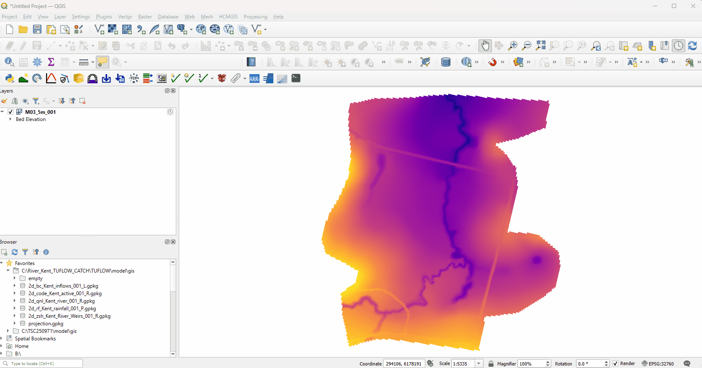
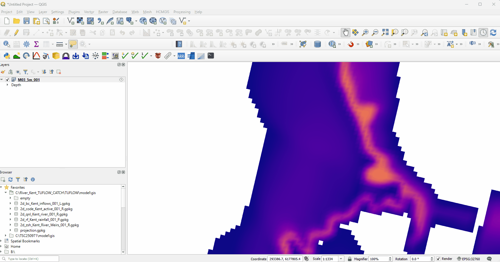
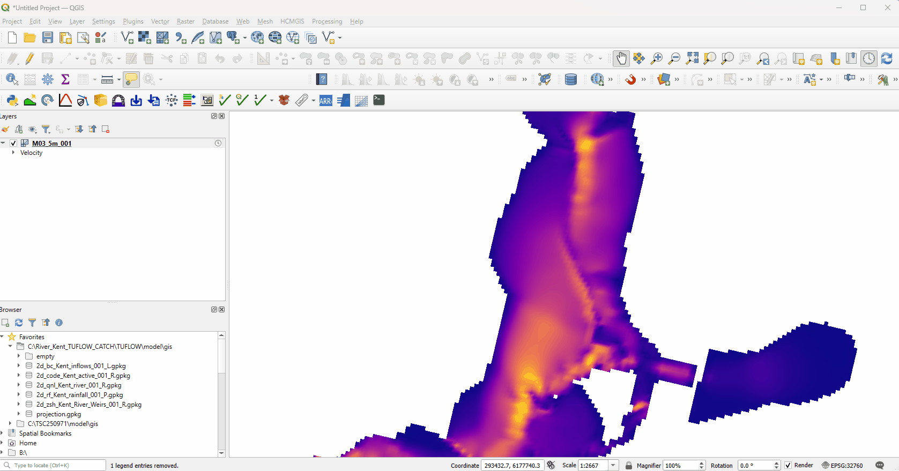
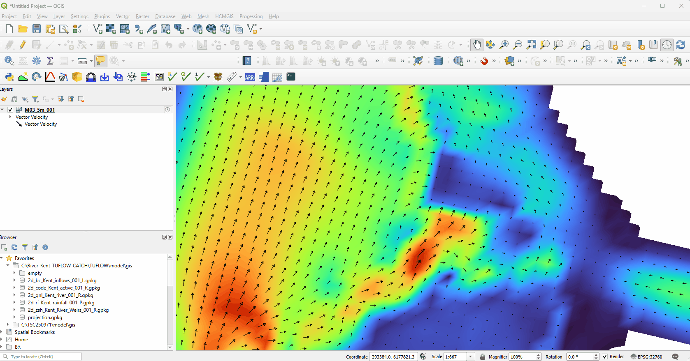
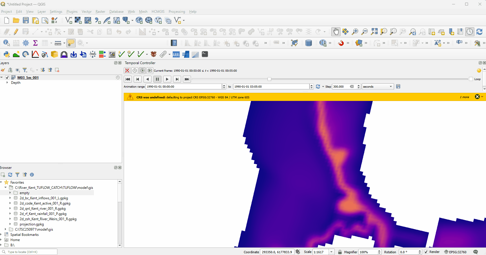

Plotting Map Outputs¶
Map Outputs are the time varying 2D mesh outputs from TUFLOW and the 3D mesh outputs from TUFLOW FV. The display, plotting, and styling options for the 2D and 3D mesh outputs in TUFLOW Viewer V2 are described in this section.
Change Results Type Selection¶
The displayed scalar result type can be changed by right clicking the mesh layer in the Layers Panel then selecting Properties (alternatively by left clicking the mesh layer in the Layers Panel, or by pressing F7 to open the Properties window) and navigating to Symbology → Datasets. The Symbology tab is located on the left-hand side of the Properties window. The desired scalar result type can then be selected by clicking on one of the palette buttons on the right hand side of the window.
Example

Display Vectors¶
Vectors can be displayed for vector result types by right clicking the mesh layer in the Layers Panel then selecting Properties (alternatively by left clicking the mesh layer in the Layers Panel, or by pressing F7 to open the Properties window) and navigating to Symbology → Datasets. The Symbology tab is located on the left-hand side of the Properties window.
On the far right hand side of the window the vectors for the chosen vector result type can then be toggled on by clicking on the arrow to the right of the relevant palette button. The vectors can be displayed alone, or overlaid on the scalar outputs by selecting both the arrow and the palette buttons.
Example

Style Scalar Map Outputs¶
Scalar map output types can be styled in a very similar way as raster layers in QGIS. This can be done via right clicking the mesh layer in the Layers Panel, then selecting Properties (alternatively by left clicking the mesh layer in the Layers Panel, or by pressing F7 to open the Properties window) and navigating to Symbology → Contours.
The following options are available for defining the styling of the scalar results:
- A custom, or pre-defined colour ramp can be chosen by clicking on the dropdown arrow for Color Ramp. There is also option to invert by selecting the Invert Color Ramp option.
- The opacity value can be manually entered, or set using the slider at the top of the window.
- The min/max values from all timesteps for a scalar output can be extracted by clicking on the "Load" button. Alternatively, users can manually define the min/max values. Values outside of this range can be removed from the display by ensuring that the 'Clip out of range' values option is ticked.
Example

Style Vector Map Outputs¶
Vector result types can be styled as arrows, streamlines, traces, or wind barbs. The most common way (and the default style) is as vector arrows. The size of the arrow can be scaled several different ways and there are also options to change things such as the line width, colour, arrow head size etc.
The styling options can be accessed by right clicking the mesh layer in the Layers Panel then selecting Properties (alternatively by left clicking the mesh layer in the Layers Panel, or by pressing F7 to open the Properties window) and navigating to Symbology → Vectors.
The following options are available for defining the styling of the vectors:
- The Symbology dropdown can be used to switch between arrows, streamlines, traces, and wire barbs.
- Values can be entered in the Line Width box to adjust the thickness of the vector lines.
- The Coloring Method dropdown can be used to switch between the Single Color (default) and Color Ramp Shader options. The Color Ramp Shader option allows the user to render the vectors thematically.
- The sizing of the arrow heads can be controlled by manually entering % values in the Width and Length boxes.
Arrow Scaling Options¶
Arrows can be scaled several different ways:
- Fixed - arrow lengths are fixed and the only thing that varies is the direction
- Defined by Min and Max - Arrow lengths are adjusted so that the minimum vector magnitude is sized to the minimum arrow length and vice versa for the maximum and everything in-between is sized accordingly. User will specify min and max arrow size for this option.
- Scaled to Magnitude - Arrow lengths are scaled solely based on vector magnitude. User will specify a scale factor for this option.
Example

Display the Mesh¶
The model mesh can be displayed by right clicking the mesh layer in the Layers Panel then selecting Properties (alternatively by left clicking the mesh layer in the Layers Panel, or by pressing F7 to open the Properties window) and navigating to Symbology → Rendering. The mesh can then be displayed by ensuring that the Native Mesh Rendering option is ticked (or the Triangular Mesh Rendering is ticked if the results have been generated using a TUFLOW FV triangular mesh). The Rendering window contains options for changing the line thickness and colour of the mesh.
Example

3D to 2D Depth Averaging¶
The 2D depth averaged value for 3D map outputs can modified directly via the TUFLOW Viewer V2 window or via the layer Properties window.
- Drag and drop TUFLOW FV 3D results into the Layers Panel in QGIS.
- Open the TUFLOW Viewer window from the toolbar and click on the Data Types icon.
- Hover over Depth Averaging widget at bottom of Data Types menu to open the list of available methods.
- Hover over the widget for the desired method(s) and then enter the result type and input values that you require. You can use the Add additional button to select another layer, range or result type.
The primary benefit of doing this directly from the TUFLOW Viewer window is the comparative ease with which plots using multiple methods, result types, layers, and ranges can be configured and displayed.
There are a range of 3D to 2D Depth Averaging methods available:
- Single Vertical Level (from top): Displays the value from the specified vertical layer indexed from the water surface.
- Single Vertical Level (from bottom): Displays the value from the specified vertical layer indexed from the bed.
- Multi Vertical Level (from top): Displays the value averaged from the specified range of vertical layers indexed from the water surface.
- Multi Vertical Level (from bottom): Displays the value averaged from the specified range of vertical layers indexed from the bed.
- Sigma: Displays values averaged across a specified fraction of the water column. Values can range from 0 (bed) to 1 (water surface).
- Depth (relative to surface): Displays values averaged across depth range defined relative to water surface.
- Height (relative to bed level): Displays values averaged across height range defined relative to bed level.
- Elevation (absolute elevation value to model datum): Displays values averaged across specified range of elevation values.
Alternatively the 3D to 2D depth averaging method can be specified by navigating to Properties → Symbology → Stacked Mesh Averaging Method. The 3D to 2D Depth Averaging method can then be changed via the Method dropdown.
Changing Reference Time¶
For TUFLOW Classic and HPC map outputs the reference time typically defaults to '1990-01-01 00:00:00', which will determine the isodate values shown for the 'Animation Range' in the Temporal Controller window. If you want to change this you can go to Properties → Temporal and then manually enter the desired start time in isodate format for the results in the Reference Time text box.
TUFLOW FV map outputs have isodate time ranges specified in the .fvc and therefore typically have correct reference time in the Properties and Temporal Controller windows on loading into QGIS.
Example

Plotting Time Series¶
To plot time series of 2D mesh based outputs, open the TUFLOW Viewer window from the TUFLOW Toolbar. A Time Series plot window should open on loading TUFLOW Viewer by default. Additional Time Series plot windows can be added by clicking on the '+' button on the tab strip and selecting Time Series Plot as the type.
To start plotting data in the Time Series plot window , select the desired result type(s) via the Data Types icon, and then activate the Draw icon. Once the Draw icon is activated, the locations at which to extract the map outputs can then be selected by clicking on the QGIS Canvas. By default, the new TUFLOW Viewer can extract outputs at multiple locations in the QGIS Canvas. The plots for these locations can be toggled on and off via the Draw icon dropdown.
Example

Plotting longitudinal and cross-section profiles¶
To plot cross-sections from 2D mesh based outputs, open the TUFLOW Viewer window from the TUFLOW Toolbar. Open a Section Plot window by clicking on the '+' button on the tab strip and selecting Section Plot as the type, or right click on the Time Series tab and change the tab type to Section.
To begin plotting data in the Section plot window, select the desired result type via the Data Types icon and then activate the Draw icon. The cross section lines along which the map outputs should be extracted can then be digitised in the QGIS Canvas. Right click to complete the digitisation of each cross-section line in the QGIS Canvas. As the cursor is moved in the Section Plot window the location of the plotted data points over which the cursor is located will be dynamically indicated by a white circle on the digitised cross section line.
By default the new TUFLOW Viewer can extract outputs for multiple cross section lines in the QGIS Canvas. The plots for these cross-section lines can be toggled on or off via the Draw icon dropdown. The time slider in the Temporal Controller window can then be used to iterate through the results at different timesteps.
Example

3D Curtain Plots¶
To generate curtain plots for TUFLOW FV 3D outputs, open the TUFLOW Viewer window from the TUFLOW Toolbar. Open a Curtain Plot window by clicking on the '+' button on the tab strip and selecting Curtain Plot as the type, or right click on the Time Series tab and change the tab type to Curtain.
To begin plotting data in the Curtain plot window, select the desired result type via the Data Types icon and then activate the Draw icon. The lines along which the map outputs should be extracted for the curtain plot can then be digitised in the QGIS Canvas. Right click to complete the digitisation of each line in the QGIS Canvas. Results can be extracted across multiple lines simultaneously in the QGIS Canvas and can be toggled on and off in the Curtain plot window via the Draw icon dropdown. The time slider in the Temporal Controller window can then be used to iterate through the results at different timesteps.
The thickness of the grid lines on the Curtain Plot window can be controlled by right clicking anywhere within the plot window and hovering over the Curtain grid line thickness widget. You can then adjust the thickness of the grid lines by moving the adjusting of the position of the thumb on the slider.
Example

3D Vertical Profiles¶
To generate 3D vertical profile plots for TUFLOW FV 3D outputs, open the TUFLOW Viewer window from the TUFLOW Toolbar. Open a Profile Plot window by clicking on the '+' button on the tab strip and selecting Profile Plot as the type, or right click on the Time Series tab and change the tab type to Profile.
To begin plotting data in the Profile plot window, select the desired result type via the Data Types icon and then activate the Draw icon. The locations at which the outputs should be extracted can then be selected by clicking on the QGIS Canvas.
By default, the new TUFLOW Viewer can extract outputs at multiple locations in the QGIS Canvas. The plots for these locations can be toggled on and off via the Draw icon dropdown. The time slider in the Temporal Controller window can then be used to iterate through the results at different timesteps.
The boundaries between vertical layers within the water column can be turned on (or off) within the Profile Plot window by right clicking anywhere within the plot window and then ticking the box for Show vertical level boundaries.
Interpolation of the values between the vertical profiles can be turned on (or off) by clicking anywhere within the plot window and then ticking the box for Linear interpolation between levels.
Example